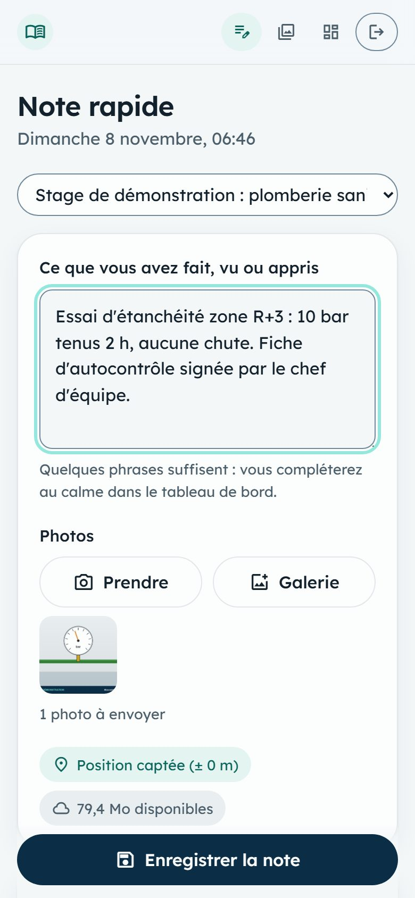
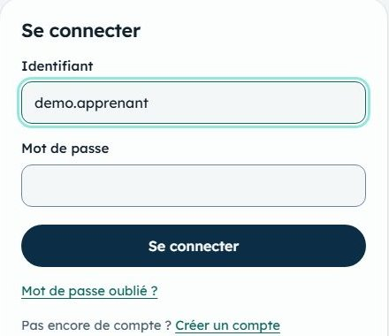
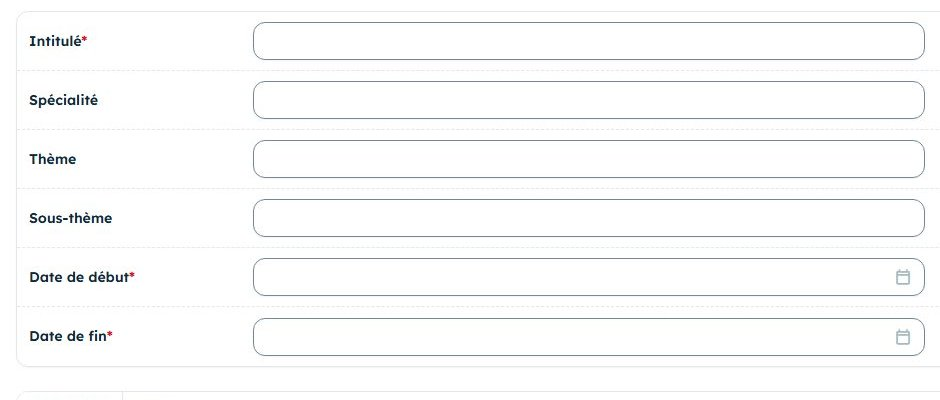
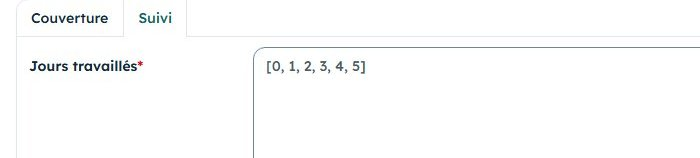
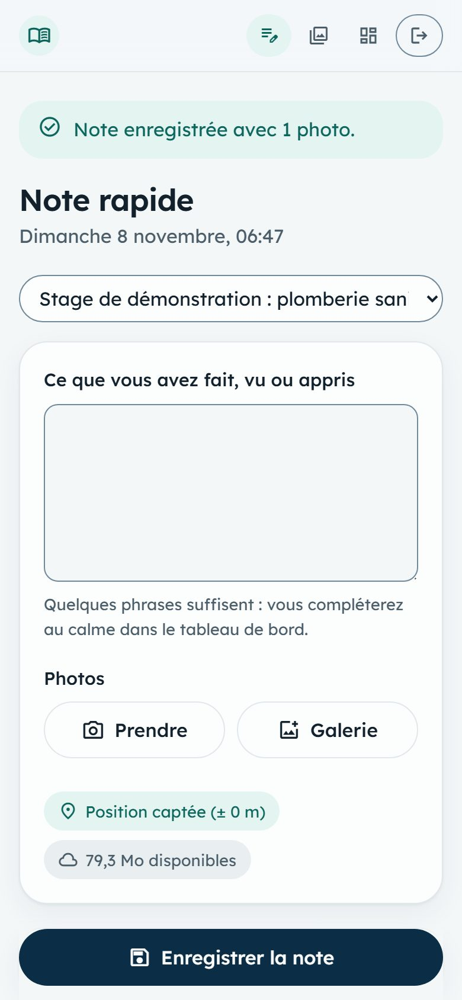
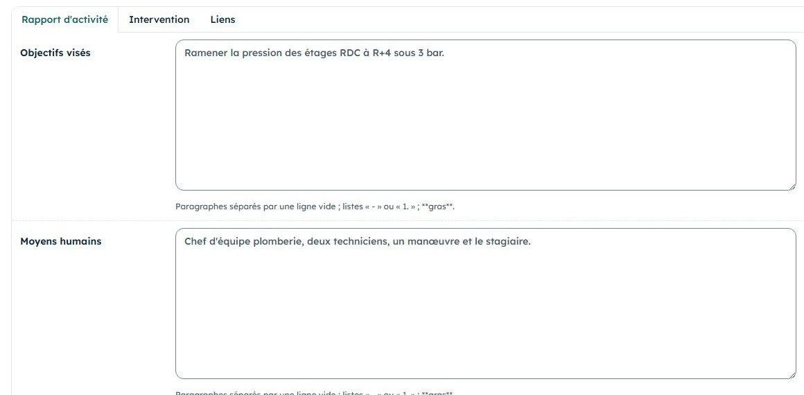

Samedi 7 novembre 2026
Ce que vous faites avant de partir, sur place et le soir, pour que rien de cette journée ne manque au rapport.

Une semaine sépare deux journées : ce que vous ne notez pas le jour même sera oublié le samedi suivant. Chaque samedi forme donc un cycle complet, à boucler avant de dormir.
| Moment | Dans l'application | Durée |
|---|---|---|
| Vendredi soir ou samedi matin | Créer son compte, créer le stage, régler les jours travaillés. | 15 min |
| Accueil dans l'entreprise | Première note rapide. Noter les noms et les fonctions sur papier ou dans la note. | 1 min |
| Visite des lieux | Note rapide sur le site, pour capter la position. Photos du matériel, avec accord. | 2 à 3 min |
| Chaque tâche confiée | Une note rapide par tâche : ce que vous avez fait, vu ou appris. | 1 min |
| Fin de journée | Note de synthèse : la journée en trois phrases. | 1 min |
| Le soir | Compléter les notes, Personnes, Lieux, Organigramme, Fiche entreprise. Trier les photos. Sauvegarder. | 30 à 45 min |
À faire le vendredi soir ou le samedi matin, sur ordinateur ou sur téléphone, à l'adresse esrventisax.pythonanywhere.com.
Accueil, Créer un compte : l'inscription est libre. Activez-le par le lien reçu par courriel, puis Se connecter. Ne prêtez à personne votre mot de passe.
Mon identifiant :

À la première connexion, le formulaire du stage s'ouvre : l'intitulé et les dates suffisent. Remplissez ce que vous savez déjà :

Onglet Suivi du stage, champ Jours travaillés. Par défaut il contient [0, 1, 2, 3, 4, 5], c'est-à-dire du lundi au samedi. Remplacez tout par :
[5]
Le chiffre 5 désigne le samedi (lundi = 0). Sans ce réglage, le tableau de bord compterait cinq « jours sans note » chaque semaine. Cliquez ensuite sur Enregistrer.

Vérifier : le tableau de bord affiche votre stage, avec Jours sans note : 0 le vendredi.
Autorisez la localisation quand le téléphone la demande. Sans réseau, écrivez quand même : le texte reste gardé dans le téléphone et vous enregistrerez plus tard.
Faites une note sur le site même (siège ou chantier) : sa position servira à créer le lieu le soir.

Ces informations sont faciles à obtenir le jour de l'accueil, et difficiles une fois le stage terminé.
Photos : demandez toujours l'accord avant de photographier. Pas de visage sans permission, pas de document interne. Les photos de l'application sont accessibles par leur adresse.
Sur ordinateur de préférence, dans le tableau de bord. Comptez 30 à 45 minutes ce premier samedi : il y a plus à saisir que les suivants.
Journal, ouvrir la note, onglet Rapport d'activité : objectifs, moyens, méthodologie, difficultés, solutions. Cocher Complétée.
Personnes : nom, fonction, rôle. Cocher À remercier, et Nom publiable seulement si la personne est d'accord.
Lieux : siège et chantier, avec des repères (« face à la pharmacie… »). Latitude et longitude se recopient depuis l'onglet Liens de la note prise sur place.
Organigramme : un poste par ligne, avec son supérieur. Marquer votre poste comme Poste du stagiaire.
Fiches entreprise : remplir au moins Présentation, Organisation générale et Historique avec ce que vous avez appris.
Trier les photos : corps, annexe ou preuve. Une photo pour le rapport demande une légende et un slug (bouton Légende et slug).

Tableau de bord, bouton Dossier terrain. Gardez le zip sur une clé USB ou dans un dossier à part. Puis vérifiez :
Cinq exercices à faire ce vendredi soir, sur votre compte, dans un stage « Entraînement » (Stages, Ajouter : intitulé et deux dates), choisi en haut de la Note rapide. Supprimez-le à la fin. Le compte de démonstration ci-dessous est en lecture seule : il montre un stage complet.
esrventisax.pythonanywhere.comdemo.apprenantdemo-local-2026À faire : sur le téléphone, écrire « Visite du local technique : deux réducteurs de pression, réglés à 3 bar. », ajouter une photo de n'importe quel objet, ouvrir Étiquettes du rapport et cocher Présentation (Partie I), enregistrer.
Résultat attendu : le message « Note enregistrée avec 1 photo. » et « Position captée » si la localisation est autorisée.
À faire : Journal, filtre Complétée : Non, ouvrir votre note. Remplir Objectifs et Difficultés, cocher Complétée, enregistrer.
Résultat attendu : la note porte une coche verte dans la liste du journal.
À faire : Trier les photos, filtre À trier, choisir Corps pour votre photo, puis Légende et slug : légende « Réducteur de pression », slug « reducteur_essai ».
Résultat attendu : la photo apparaît sous le filtre Corps du rapport.
À faire : ouvrir le tableau de bord et repérer les cases orange.
Résultat attendu : vous savez dire, pour chaque case orange, quelle action la fait passer au vert.
À faire : bouton Dossier terrain, puis ouvrir le zip et repérer terrain.md.
Résultat attendu : un fichier dossier-terrain-entrainement-….zip et Dernière sauvegarde : Aujourd'hui.
Le rapport ne raconte pas vos journées : il en tire des faits, des chiffres et des méthodes. Une note utile contient au moins l'un des trois.
« Aujourd'hui on a fait de la plomberie avec le chef, c'était bien. »
« Pose de 6 m de tube PPR de 25 mm au 2e étage avec le chef d'équipe plomberie. Soudure au polyfuseur, matrice de 25. Une fuite à l'essai : soudure trop courte, refaite. »
Réécrivez chaque note pour qu'elle serve au rapport. Inventez les détails pour vous entraîner ; demain, vous noterez les vrais.
« Accueil, présentation de la boîte. »
« On a vu des climatiseurs. »
« Le chef m'a montré les outils. »
[5].